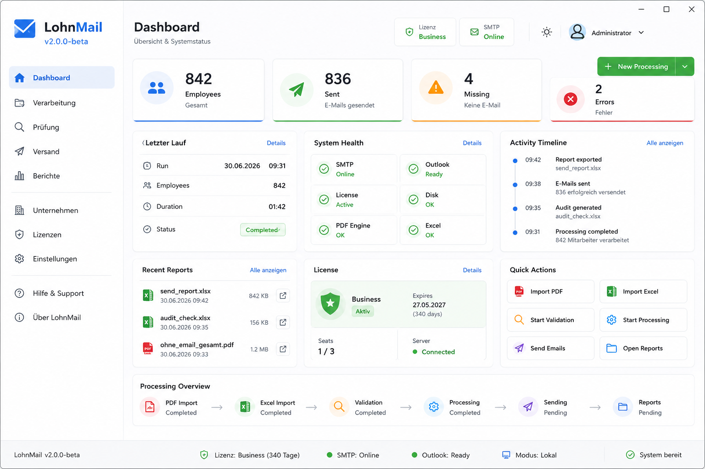

Zeitdruck reduzieren
PDFs, Excel-Daten, Pruefung und Versand laufen in einem klaren Prozess statt in verstreuten manuellen Schritten.
Software aus der Lohnbuchhaltung
LohnMail unterstuetzt Lohnbuchhaltungen beim monatlichen Versand sensibler Abrechnungen: uebersichtlich, dokumentiert und auf reale Arbeitsablaeufe abgestimmt.

Warum LohnMail
PDFs, Excel-Daten, Pruefung und Versand laufen in einem klaren Prozess statt in verstreuten manuellen Schritten.
Mitarbeitende ohne hinterlegte Adresse werden sichtbar, bevor der Versand startet.
LohnMail ist auf den lokalen Einsatz ausgerichtet und vermeidet unnoetige Cloud-Abhaengigkeiten.
Pruefungen, Versandstatus und Berichte bleiben nachvollziehbar fuer interne Kontrolle und Rueckfragen.
Nicht theoretisch entwickelt
Der Entwickler arbeitet selbst als Lohnbuchhalter und kennt die monatlichen Herausforderungen: sensible Daten, manuelle Kontrolle, Rueckfragen von Mitarbeitenden, fehlende E-Mail-Adressen und die Notwendigkeit einer verlaesslichen Dokumentation.
Klarer Ablauf
PDF-Abrechnungen und Mitarbeiterdaten aus Excel werden fuer den Lauf vorbereitet.
LohnMail zeigt offene Punkte, fehlende E-Mail-Adressen und moegliche Fehler vor dem Versand.
Abrechnungen werden gezielt an die passenden Empfaenger versendet.
Berichte helfen bei Nachweis, Kontrolle und spaeteren Rueckfragen.
LohnMail kennenlernen
Ideal fuer Unternehmen, die ihren monatlichen Versand von Lohnabrechnungen klarer, schneller und nachvollziehbarer organisieren wollen.